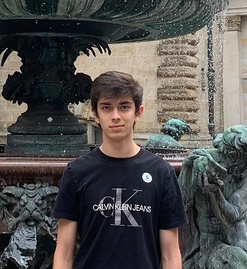
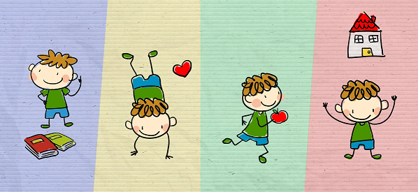
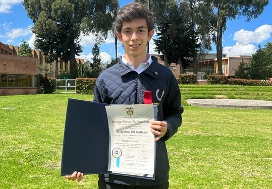
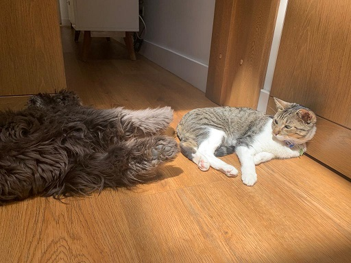
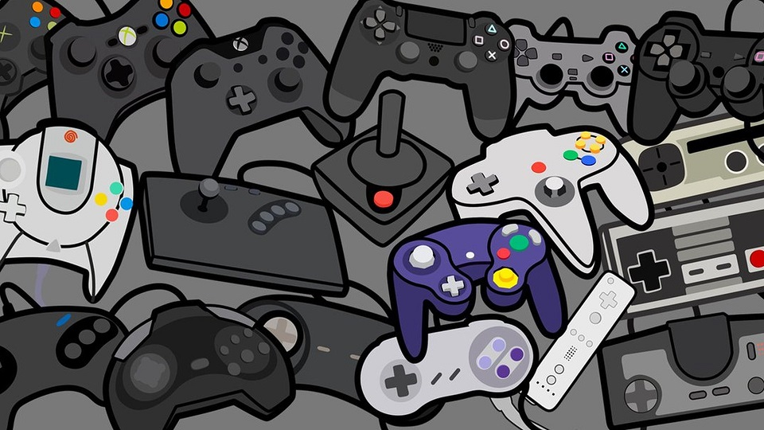

Blog de Alejandro Gil Gallego
Mi nombre es Alejandro Gil Gallego, actualmente a febrero de 2023 tengo 18 años y soy estudiante de ingeniería informática
de la Universidad de la Sabana, Bogotá. Soy un fanático de los videojuegos, del fútbol y de hacer deporte.
A lo largo de este blog hablare acerca de mi vida, mi pasado, presente y lo que aspiro para mi futuro. En el ámbito académico y profesional.

Mi Pasado
Jardín y Primaria 2007-2015
En mi vida empecé estudiando en el jardín, uno en Bogotá y posteriormente dos en Chía, una de las épocas más importantes
de la vida de muchas personas, durante esta aprendímuchas bases de la educación que he visto posteriormente, así como desarrollar
mis primeros gustos por algunos objetos sobre otros, así como poder desarrollar mi creatividad y mis motricidades básicas.
Posteriormente pase a la etapa escolar de mi vida, estuve en un primer colegio durante los dos primeros años, posteriormente
me pase al colegio en el cual me termine graduando y conocí a amigos que atesoro mucho.

Bachillerato 2015-2021
Durante mi época de bachillerato no fue muy espectacular ni llenísima de buenos recuerdos, los primeros años fueron un tanto
complicados, pero sin grandes inconvenientes, los cuales logre arreglar en su tiempo de buena manera. A medida que pasaban los
años me enfrente a diversas experiencias algunas más enriquecedoras que otras, y aprendiendo cosas nuevas un tanto más complejas
y avanzadas, hasta finalmente lograr mi graduación a finales del 2021.

Mi Presente
Desde los inicios del 2022 hasta hoy en día soy estudiante de la Universidad de la Sabana, Bogotá en ingeniería informática,
ha sido poco más de un año de gran aprendizaje donde he desarrollado nuevas habilidades, experimentado cosas nuevas y
he conocido a personas que son muy importantes para mí en la actualidad. Así como ha sido un soplón de aire fresco para mi vida
donde he experimentado muchos cambios comparado con mis años preuniversitarios, los cuales he disfrutado bastante.
Además en estos momentos tengo dos mascotas que quiero mucho Menta (Gata) y Milo (Perro).

Mi Futuro
Tengo claro que lo que me espera mi futuro es incierto, pero a pesar de ello tengo aspiraciones y hago algunas cosas
para que dichas ideas, se puedan en un futuro convertirse en una realidad. Siempre he tenido un amor por conocer lugares nuevos
y por la belleza de los múltiples paisajismos que adornan a nuestro planeta, por ende, tengo la aspiración de poder conocer
el mundo y hacer parte de él, y si es posible conseguir vivir en otro país que me llene y me de vida. También espero
conseguir un trabajo interesante relacionado con la informática la cual tiene posibilidades de convertirse en uno de los grandes
trabajos del presente y futuro. Y si se dan las cosas buscar la posibilidad de trabajar en la industria de los videojuegos.
